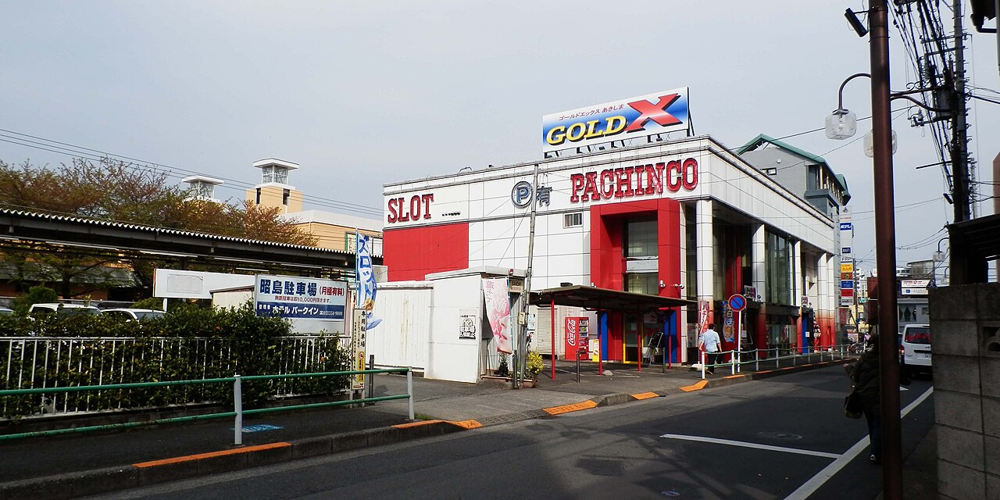
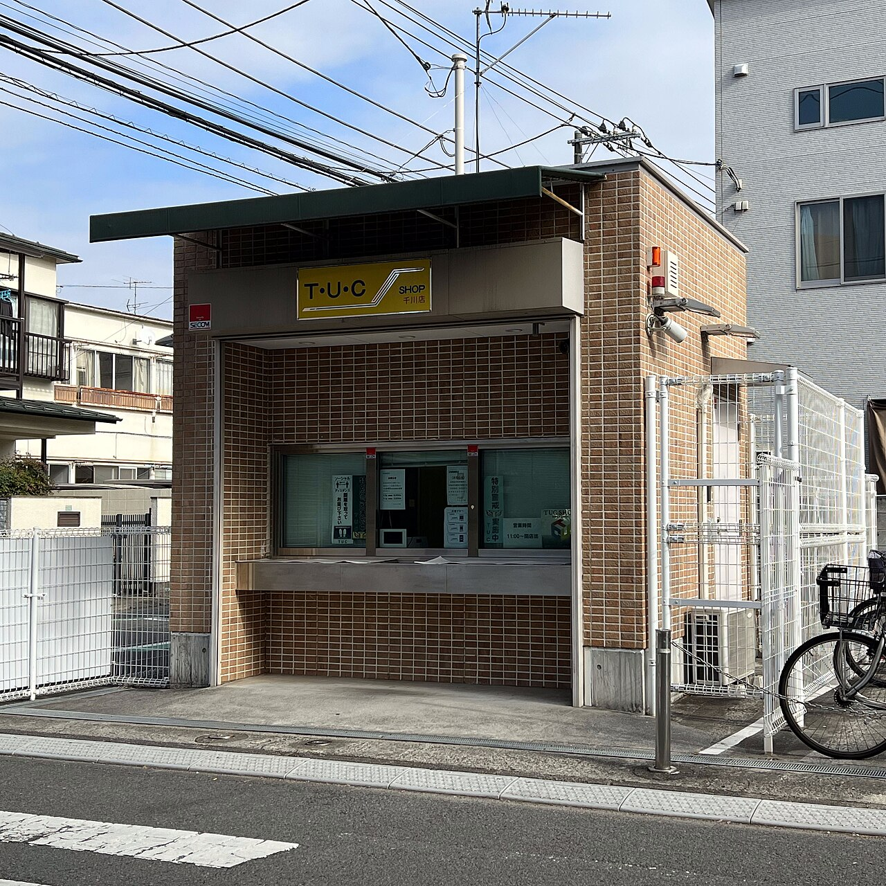
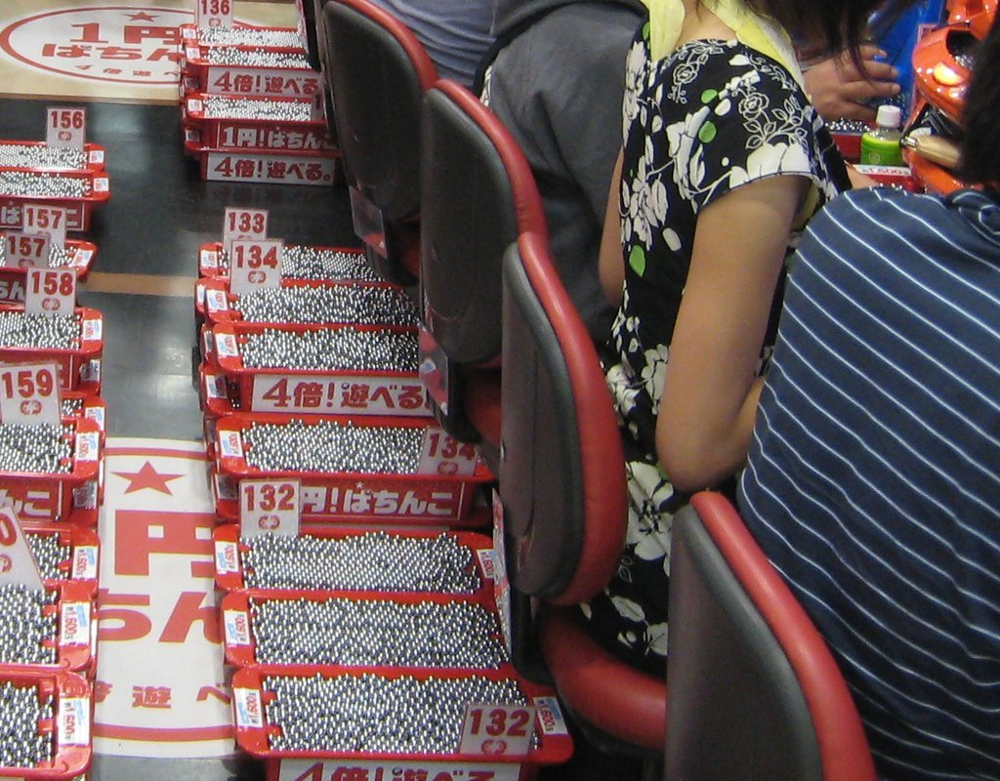
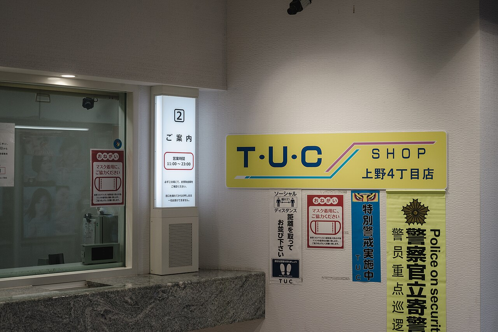
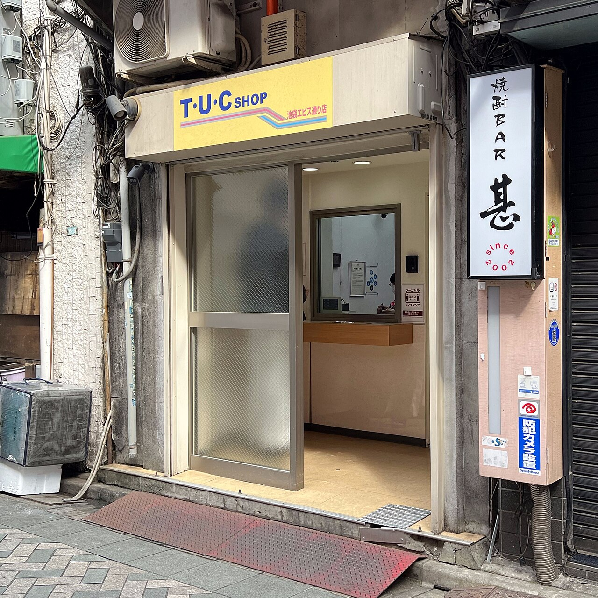
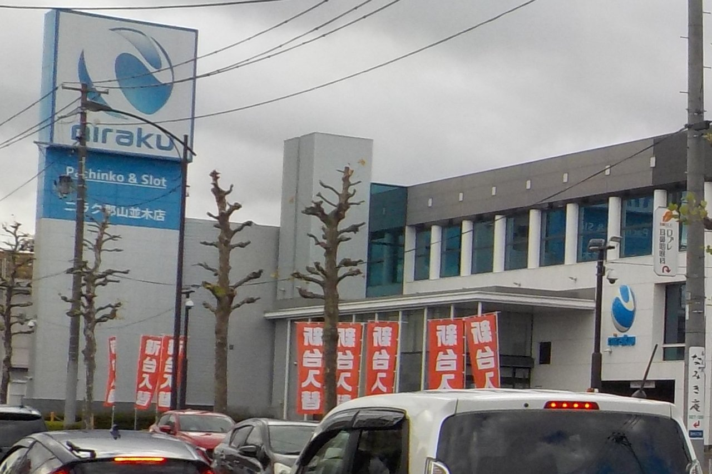
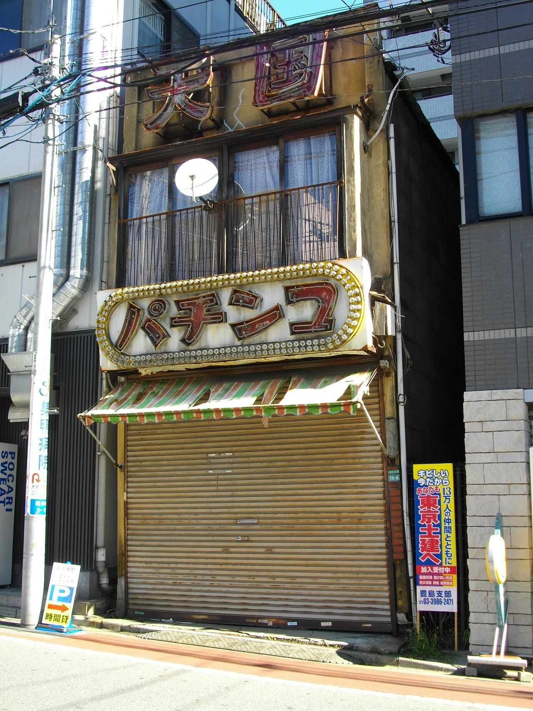

東京・千川（せんかわ）、2023年12月。住宅街の道ばたに、タイル張りの小さな建物が立っています。正面には窓口が1つ。黄色い看板に「T・U・C SHOP」の文字があるだけで、商品を並べた棚はどこにもありません。

社会・経済Society & Economy
写真：Pachinko Gold X Akishima／木魚（2013年、CC0）
パチンコの景品交換所は、なぜいつも店のすぐ隣にある？
パチンコ店のそばにある、窓口が1つだけの小さな建物。法律は店が玉をお金に替えることを禁じているのに、なぜそこではお金を受け取れるのでしょう。景品が店に戻ってくるまでの輪の図と、遊ぶ人の数のグラフで、店の外にある「別の業者」のしくみをたどってみませんか。

こうした建物は「景品交換所」と呼ばれ、全国のパチンコ店の近くにあります。店でもらった景品を持ってくると、お金に替えてくれる場所です。「T・U・C SHOP」は、東京で景品を買い取っている業者の窓口の名前です。
でも日本では、お金を賭けることは法律で禁じられているはず。では、なぜ交換所は店の中ではなく、多くの場合すぐ近くにあるのでしょうか。
In a word
法律で、パチンコ店は玉をお金に替えることも、自分が出した景品を買い取ることも禁じられています。そこで、店とは別の業者が景品を買い取る「三店方式」ができました。買い取るのは店以外でなければならないけれど、遠いと客が困る。だから多くの交換所は店を出てすぐの場所にあるのです。
お金を賭ければ賭博。パチンコは「遊技」として許されている
刑法は、お金などを賭けて勝ち負けを争う「賭博」を罪としています。ただし、その場で食べるお菓子のような、ちょっとした楽しみの物を賭けただけなら罪にはなりません。賭博をくり返したり、賭博の場を開いてもうけたりすると、さらに重い罰があります。
いっぽうパチンコ店は、「風営法」（風俗営業等の規制及び業務の適正化等に関する法律）という別の法律に、「ぱちんこ屋」として名前が出てきます。玉で遊ぶ「遊技」をさせる店です。開くには、都道府県の公安委員会（警察を管理する、都道府県の機関）の許可が要ります。

政府は2016年11月の答弁書（国会議員の質問に、内閣が文書で答えたもの）で、パチンコ店が風営法の規制の範囲内で営業していれば、賭博の罪には当たらないという考えを示しました。遊技として認められるには、風営法のルールを守ることが前提なのです。
店は、玉をお金に替えてはいけない
パチンコでは、客がお金を払って店の玉を受け取ることを「玉を借りる」といいます。借りた玉で遊び、出た玉をどうするか。そのルールの中心が、風営法23条です。パチンコ店がしてはいけないことを4つ挙げています。
1つめは「現金又は有価証券を賞品として提供すること」。有価証券は、商品券のようにお金と同じ働きをする券です。2つめは「客に提供した賞品を買い取ること」です。
残りの2つは、玉を店の外に持ち出させること、玉を預かったという証明書を客に渡すことです。出た玉は、そのまま持ち帰ったり、お金に替えたりはできません。景品の値段は、国の規則で1つ9,600円（と消費税）までと決められています。
景品カウンターには、お菓子や日用品と並んで「特殊景品」と呼ばれる品が置かれています。中身は地域によって違います。東京都では1990年代から、小さな金の板（地金）をプラスチックのケースに封じたものが使われてきました。

ふつうの景品は、そのまま家に持ち帰ります。ところが特殊景品は、たいてい店を出てすぐの交換所へ持ちこまれます。ここから先は、パチンコ店の外の話です。
買い取るのは、店の外の「別の業者」
特殊景品の行き先を追うと、3つの業者が出てきます。パチンコ店、景品交換所、そして景品問屋（とんや。品物を仕入れて店に卸す業者）です。3者のあいだを景品とお金がめぐるしくみを「三店方式」と呼びます。
「三店」は、この3つの「店」のこと。下の図には客も入っていますが、客は数に入りません。
Fig.01特殊景品は、ぐるりと回って店に戻る
- パチンコ店客の玉を数え、その分の特殊景品を渡す
- 客特殊景品を持って店を出て、交換所へ行く
- 景品交換所特殊景品を買い取り、客に現金を払う
- 景品問屋交換所から特殊景品を買い、パチンコ店に卸す
店が自分で買い取れば、23条違反です。政府は2014年11月の答弁書で、その場合は賭博罪が成り立つこともありうるとしました。2017年6月の答弁書では、店以外の業者でも、店と「実質的に同一」と認められれば違反になりうる、と述べています。
いっぽう2016年11月の答弁書では、客が景品を店以外の第三者に売ることも「あると承知している」と答えています。分かれ目は、店と買い取る業者が本当に別かどうかなのです。
では、なぜすぐ近くなのか。店は自分で買い取れないので、買い取りは店とは別の業者がしなければなりません。けれど、景品を持って遠くまで歩かされては客が困ります。そのため交換所は、店から遠くない場所に置かれてきました。
地域によっては、店の出入り口のすぐそばや、同じ建物の中に交換所があることもあります。大事なのは、壁で隔てることではありません。店とは別の業者が買い取ることです。
交換所の仕事は、特殊景品を買い取って問屋に売ること。品物を売る店ではないので、商品を並べる棚は要りません。窓口が1つあれば足りるのです。

この形は、パチンコが生まれたときからあったわけではありません。戦後、パチンコがはやると、景品のたばこなどを店の外で買い取る業者が現れました。そこには暴力団がからむこともありました。
遊ぶ人は、30年で約4分の1になった
日本生産性本部の「レジャー白書」によると、1年に1回以上パチンコやパチスロ（スロットの台）で遊んだ人は、1995年に約2,900万人いました。2025年は約720万人です。30年で、およそ4分の1になりました。
Fig.02パチンコ・パチスロで遊んだ人の数
2018年に公布されたギャンブル等依存症対策基本法は、パチンコを競馬などと並べて、のめり込みを防ぐ対策の対象に含めています。刑法の上では賭博にあたらない遊技でも、この法律では同じ枠に入るのです。


6,464店
全国のパチンコ店の数。いちばん多かった1995年の1万7,631店の4割に満たない2025年末。警察庁の資料による
16.2兆円
客が玉やメダルを借りるのに払ったお金の合計。景品として客に戻る分も含む。最も多かった2005年は約34.9兆円2025年。レジャー白書2026による
約9.3万円
遊んだ人1人が、1年に使った費用の平均。遊んだ回数の平均は年25.5回2025年。レジャー白書2026による
ここが面白い！
三店方式の原型は、福祉の仕事だった
1961年、大阪。景品の買い取りから暴力団を締め出すために、もと大阪市警の警察官だった水島年得が考えたとされるのが「大阪方式」です。
買い取りの仕事を任されたのは、体の不自由な人や、夫を亡くした女性のための福祉団体だったといわれます。
暴力団の資金源を断つことと、働き口を見つけにくい人に働く場をつくること。2つの目的を重ねたこのしくみが、のちに全国の三店方式のもとになったとされます。
次にパチンコ店の前を通ったら、近くにある窓口だけの小さな建物を探してみてください。店とは別の業者が、店のすぐそばにいる。その近さと遠さに、60年あまり前の大阪の工夫が残っています。
出典・参考
- 刑法（e-Gov 法令検索）：第185条（賭博。一時の娯楽に供する物の例外）、第186条（常習賭博、賭博場開張等図利）
- 風俗営業等の規制及び業務の適正化等に関する法律（e-Gov 法令検索）：第2条第1項第4号（ぱちんこ屋）、第3条（公安委員会の許可）、第23条第1項（現金・有価証券の提供、賞品の買い取り、遊技球等の持ち出し、保管証の発行の禁止）
- 風俗営業等の規制及び業務の適正化等に関する法律施行規則（e-Gov 法令検索）：第36条第3項（賞品の価格の上限は9,600円に消費税等相当額を加えた額）
- 衆議院議員緒方林太郎君提出風俗営業等の規制及び業務の適正化等に関する質問に対する答弁書（内閣、2016年11月18日）：客が賞品を第三者に売却することもあると承知していること、風営法の規制の範囲内の営業は刑法185条の罪に該当しないとの考え
- 参議院議員浜田和幸君提出ギャンブル依存症に関する質問に対する答弁書（内閣、2014年11月4日）：営業者が賞品を買い取った場合は風営法23条違反のほか、賭博罪等が成立する場合もあり得ること
- 衆議院議員高井崇志君提出景品交換所のぱちんこ屋からの独立性に関する質問に対する答弁書（内閣、2017年6月20日）：第三者の買い取りでも、営業者と実質的に同一と認められれば23条第1項第2号違反となることがあること
- 三店方式（日本語版 Wikipedia）：3業者の役割と流れ、客の利便のため交換所が店から遠くない場所にあり、店の出入り口付近や建物内部にある地域もあること、東京都の金地金の特殊景品、東京ユニオンサーキュレーションの交換所、戦後の換金業者と暴力団、1961年に水島年得が考案したとされる「大阪方式」と大阪身障者未亡人福祉事業協会への委託（鍛冶博之「パチンコホール業界の現代的課題と対策(I)」『社会科学』78号、同志社大学人文科学研究所、2007年による）
- Pachinko（英語版 Wikipedia）：かつて暴力団が景品の換金にかかわっていたこと、1960年代からの警察の取り組み
- ギャンブル等依存症対策基本法（e-Gov 法令検索）：平成30年法律第74号（2018年7月13日公布）、第2条で「ぱちんこ屋に係る遊技」を「ギャンブル等」に含める定義
- パチンコ（日本語版 Wikipedia）：レジャー白書による参加人口（1995〜2023年）と売上の推移、2015年版で過去の数字が改められ売上のピークが2005年（34兆8,620億円）になったこと
- レジャー白書2026の概要（P-town、2026年10月27日）：2025年の参加人口720万人（前年比30万人増。ここから2024年を690万人とした）、市場規模16.2兆円、年間平均費用9万3,000円、年間平均活動回数25.5回
- 平成8年 警察白書 第3節 風俗営業の健全化と風俗環境の浄化（警察庁）：1995年（平成7年）のぱちんこ屋の数1万7,631軒
- マネーポストWEB（2026年5月3日）：警察庁「令和7年における風俗営業等の現状と風俗関係事犯等の取締り状況について」による2025年末のパチンコ店の数6,464店
- 写真：Pachinko Gold X Akishima／木魚（2013年、CC0）。本文中の写真のクレジットは、それぞれの写真の下に記しています（いずれも CC0 またはパブリックドメイン）